.png)
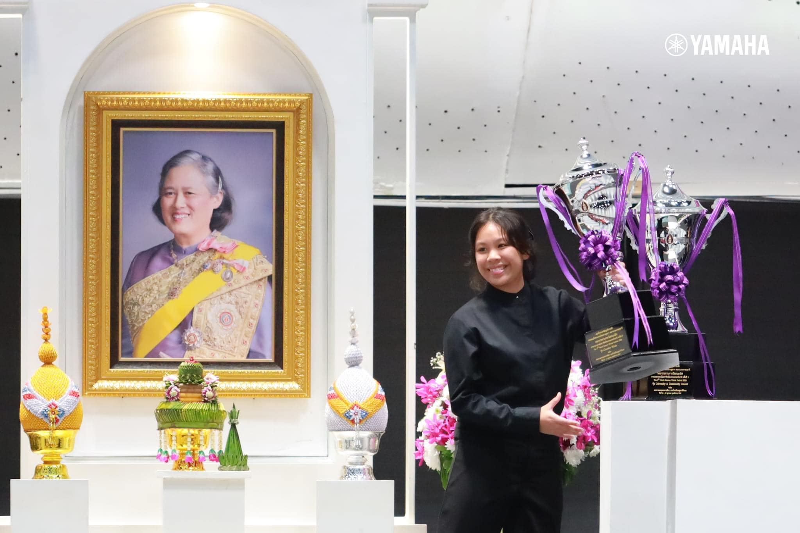
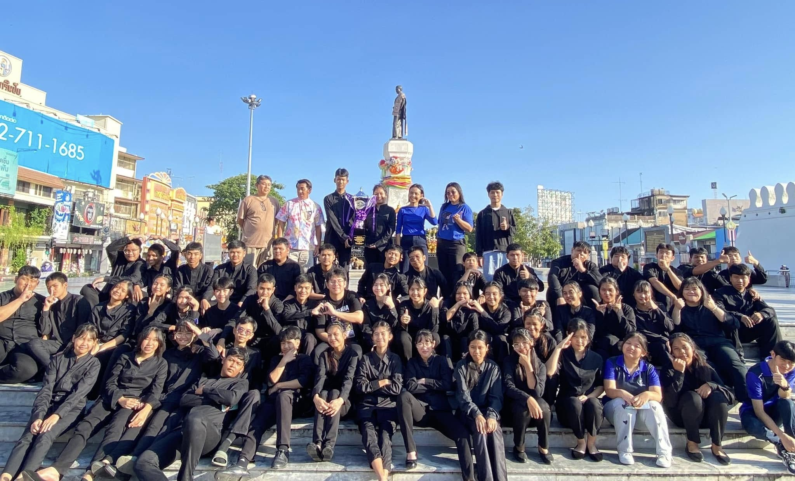
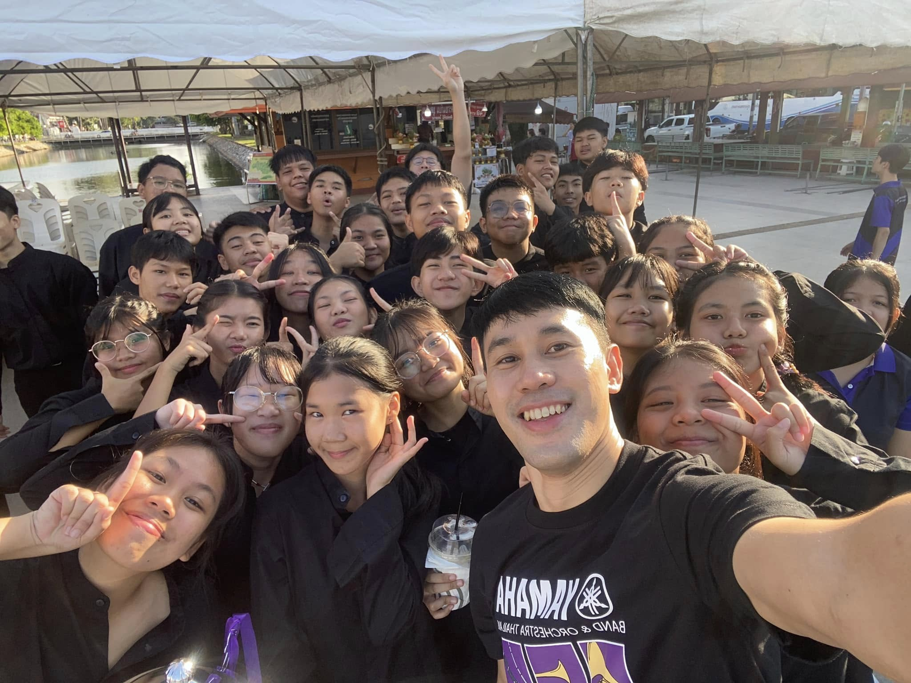
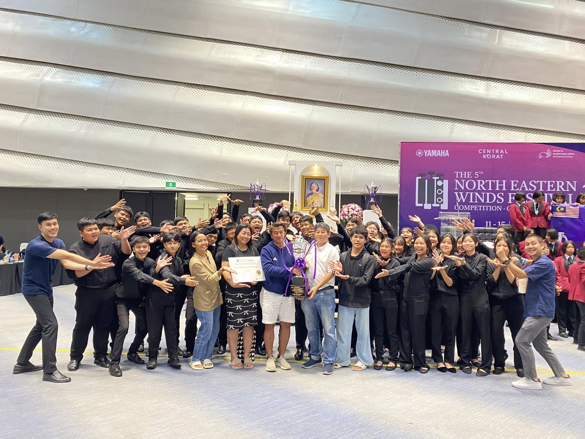
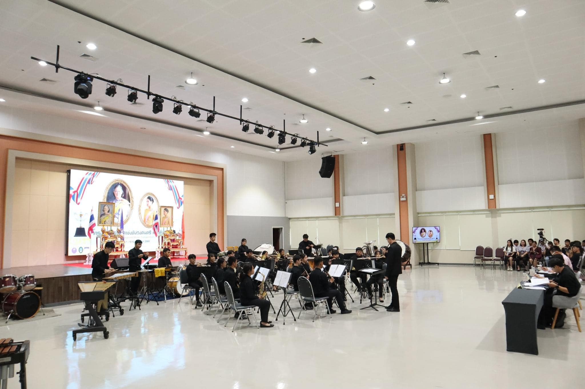
ประวัติวงดุริยางค์ โรงเรียนมัธยมบ้านบางกะปิ
Matthayom Banbangkapi Wind Symphony
เริ่มก่อตั้งในช่วงปี พ.ศ. 2543 หรือประมาณปี ค.ศ. 2000 ภายใต้การดูแลของครูผู้สอนที่มีความเชี่ยวชาญในด้านดนตรี โดยในช่วงแรกๆ วงนี้เริ่มต้นจากการรวมตัวของนักเรียนที่มีความสนใจในดนตรีและเครื่องดนตรีประเภทเครื่องเป่าลม ทั้งนี้ ครูผู้สอนมีบทบาทสำคัญในการเสริมสร้างทักษะการเล่นดนตรีให้กับนักเรียน รวมทั้งการฝึกซ้อมและการเตรียมตัวสำหรับการแสดงต่างๆ
History of the Matthayombanbangkapi Wind Symphony
Matthayom Banbangkapi Wind Symphony The band was established around the year 2000 (B.E. 2543) under the guidance of music teachers with expertise in the field. In its early days, the band began as a gathering of students interested in music and wind instruments. The teachers played a crucial role in enhancing the students' musical skills, as well as organizing rehearsals and preparing them for various performances.
The 5th North Eastern Winds Festival 2024
Chamber Winds รุ่น Permier Division
ผลรางวัลการแข่งขันได้รับรางวัลชนะเลิศ
🏆ได้รับถ้วย
รางวัลถ้วยพระราชทานสมเด็จพระกนิษฐาธิราชเจ้า กรมสมเด็จพระเทพรัตนราชสุดาฯ สยามบรมราชกุมารี
ชนะเลิศอันดับที่ 1
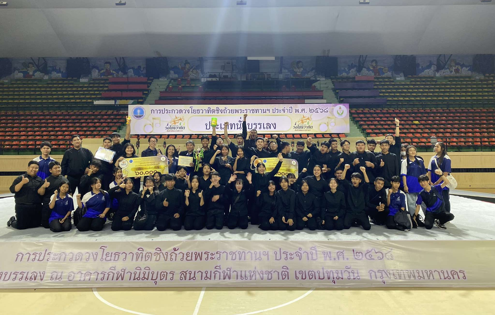
ประกวดวงโยธวาทิต ชิงถ้วยพระราชทาน ประจำปี พ.ศ.2568
ประเภทนั่งบรรเลง
ผลการแข่งขันวงดุริยางค์โรงเรียนมัธยมบ้านบางกะปิ
🏅 รางวัลความสามารถระดับ เหรียญทอง
🏆รางวัล รองชนะเลิศอันดับที่ 2
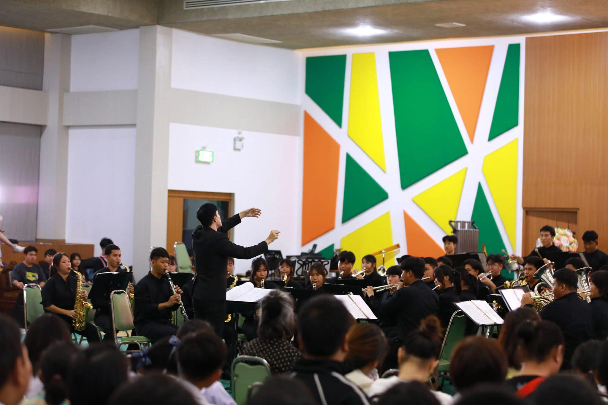
7th Valaya Alongkorn Music Competition 2024
ประเภท Concert Band ระดับไม่เกินมัธยมศึกษาปีที่ 6
ผลการแข่งขันวงดุริยางค์โรงเรียนมัธยมบ้านบางกะปิ
🏆
ได้รับรางวัลรองชนะเลิศอันดับที่ 1 ด้วย คะแนน 92.66 ความสามารถระดับเหรียญทอง จากผู้เข้าประกวดแข่งขัน 23 วง
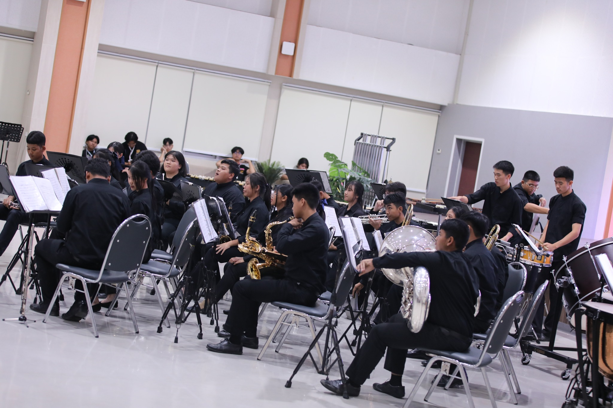
7th Valaya Alongkorn Music Competition 2024
ประเภท Wind Ensemble ระดับไม่เกินมัธยมศึกษาปีที่ 6
ผลการแข่งขันวงดุริยางค์โรงเรียนมัธยมบ้านบางกะปิ
🏆
ได้รับรางวัลรองชนะเลิศอันดับที่ 1 ด้วย คะแนน 93.23 ความสามารถระดับเหรียญทอง จากผู้เข้าแข่งขันทั้งหมด 39 วง

The 5th North Eastern Winds Festival 2024
Secondary Concert รุ่น Championship Division
ผลการแข่งขันได้รับรางวัลความสามารถระดับเหรียญทองและรางวัลพิเศษ
🏆KITTI AWARD
- MATTHAYOMBANBANGKAPI SCHOOL
📜BEST MARCH
- MATTHAYOMBANBANGKAPI SCHOOL
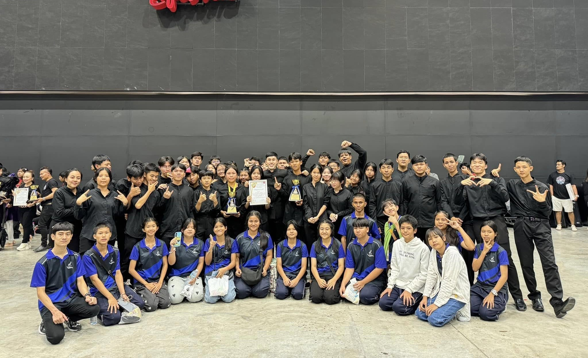
Thailand Symphonic Concert Competition 2024
ประเภท Wind Ensemble รุ่นอายุไม่เกิน 24 ปี
วงดุริยางค์โรงเรียนมัธยมบ้านบางกะปิได้รับรางวัล
🏆ได้รับรางวัล รองชนะเลิศอันดับที่ 1 และรางวัลระดับความสามารถ เหรียญทอง🎖️
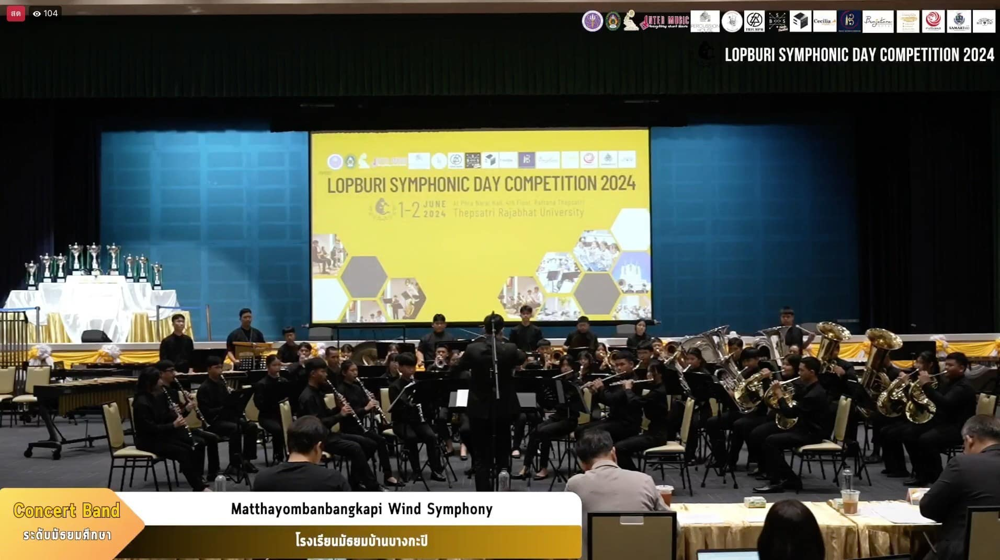
Lopburi Symphonicband Day Competition 2024 Thepsatri Rajabhat University
ประเภท Concert Band รุ่นอายุไม่เกิน 18 ปี
วงดุริยางค์โรงเรียนมัธยมบ้านบางกะปิได้รับรางวัล
ได้รับรางวัลความสามารถระดับ เหรียญทอง 🏅
ได้รับรางวัล รองชนะเลิศอันดับที่ 1
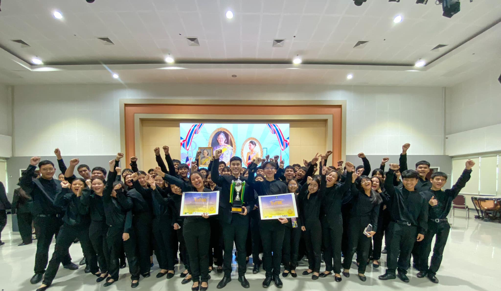
Valaya Alongkorn Music Competition 2023
ประเภท Concert Band รุ่นอายุไม่เกิน 18 ปี
วงดุริยางค์โรงเรียนมัธยมบ้านบางกะปิได้รับรางวัล
ได้รับรางวัล อันดับที่ 4
ระดับความสามารถ เหรียญทอง 🥇
Valaya Alongkorn Music Competition 2023
ประเภท Wind Ensemble รุ่นอายุไม่เกิน 18 ปี
วงดุริยางค์โรงเรียนมัธยมบ้านบางกะปิได้รับรางวัล
ได้รับรางวัลรองชนะเลิศอันดับ 2
ระดับความสามารถ เหรียญทอง 🥇

ประกวดวงโยธวาทิตนานาชาติครั้งที่ 15 แห่งประเทศไทย
ประเภท Wind Ensemble
วงดุริยางค์โรงเรียนมัธยมบ้านบางกะปิได้รับรางวัล
ได้รับรางวัล รองชนะเลิศ อันดับ 1
ระดับความสามารถ เหรียญทอง🥇
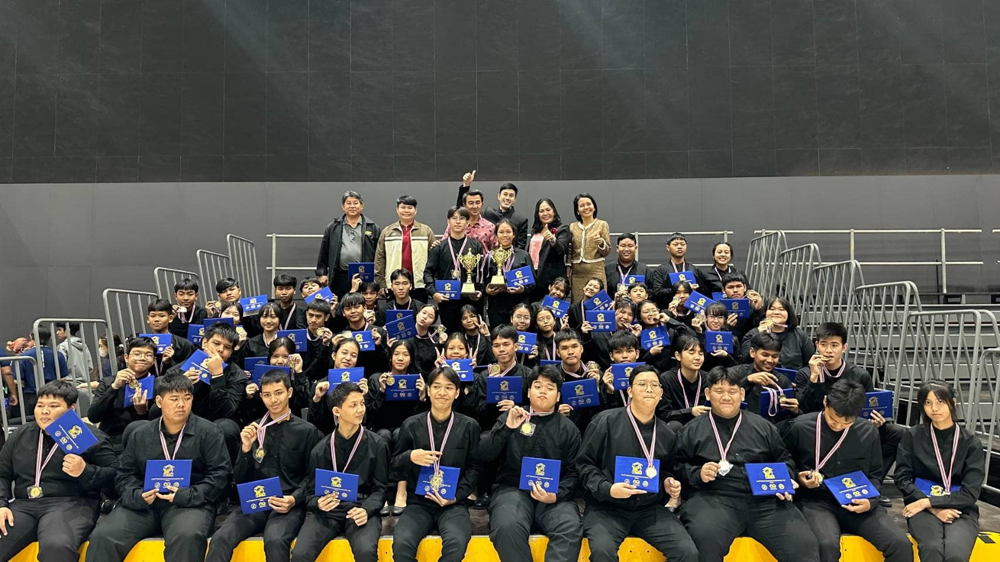
ประกวดวงโยธวาทิตนานาชาติครั้งที่ 15 แห่งประเทศไทย
ประเภท Concert Band
วงดุริยางค์โรงเรียนมัธยมบ้านบางกะปิได้รับรางวัล
ได้รับรางวัล รองชนะเลิศ อันดับ 1
ระดับความสามารถ เหรียญทอง🥇
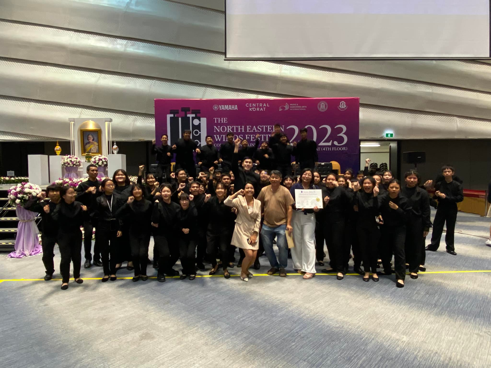
The 5th North Eastern Winds Festival 2024
Secondary concert ประเภท Championsship
ได้รับรางวัลระดับความสามารถ เหรียญทอง🥇
เกียรตินิยม อันดับ 1
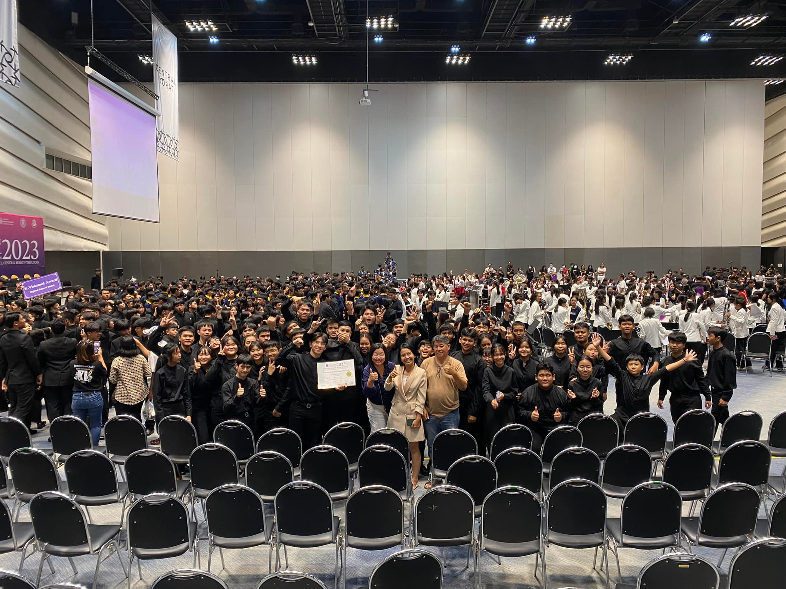
The 5th North Eastern Winds Festival 2024
Secondary concert ประเภท Premier Division
ได้รับรางวัลระดับความสามารถ เหรียญทอง🥇
รองชนะเลิศ อันดับ 2
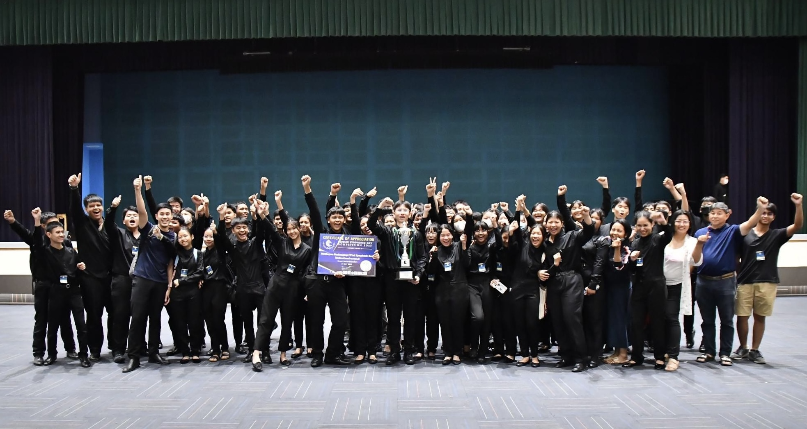
Lopburi Symphonicband Day Competition 2023 Thepsatri Rajabhat University
ประเภท Concert Band รุ่นอายุไม่เกิน 18 ปี
ได้รับรางวัลระดับความสามารถ เหรียญทอง🥇
รองชนะเลิศ อันดับ 2